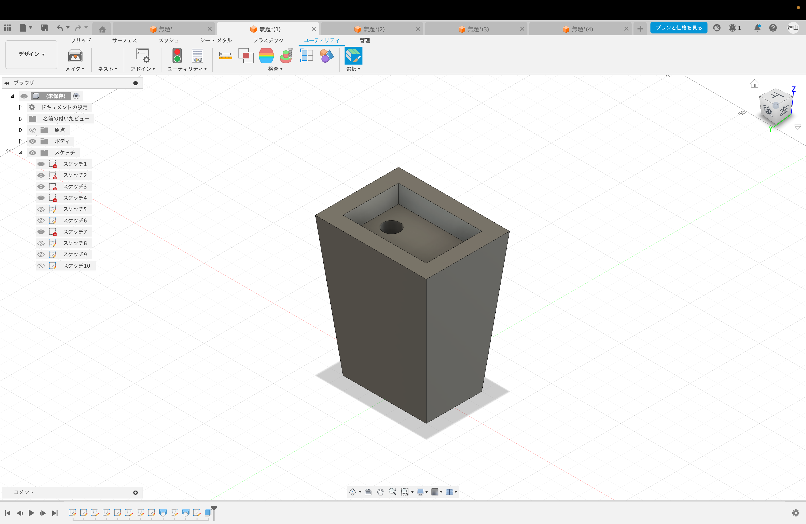
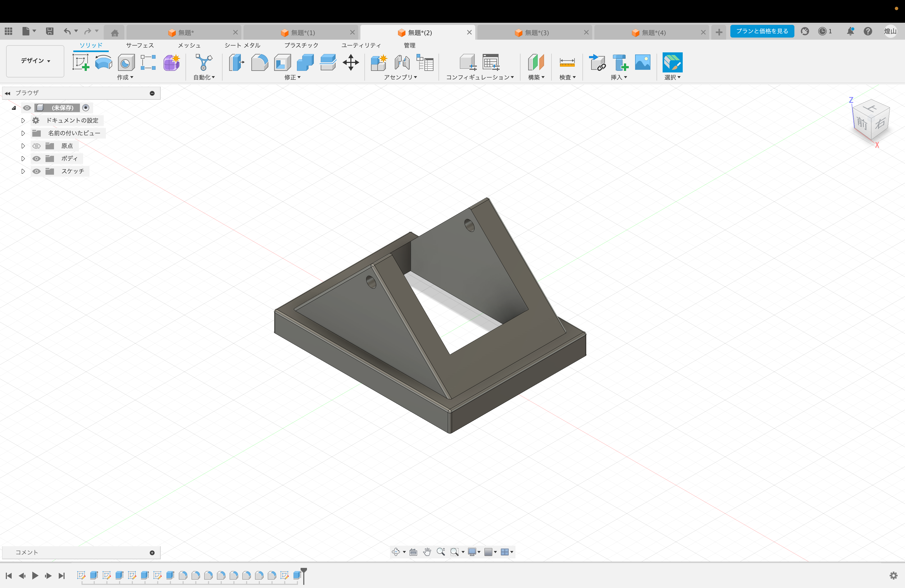
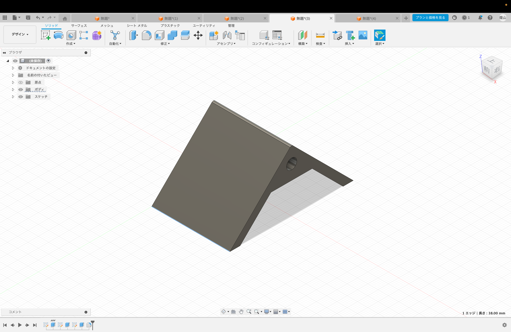
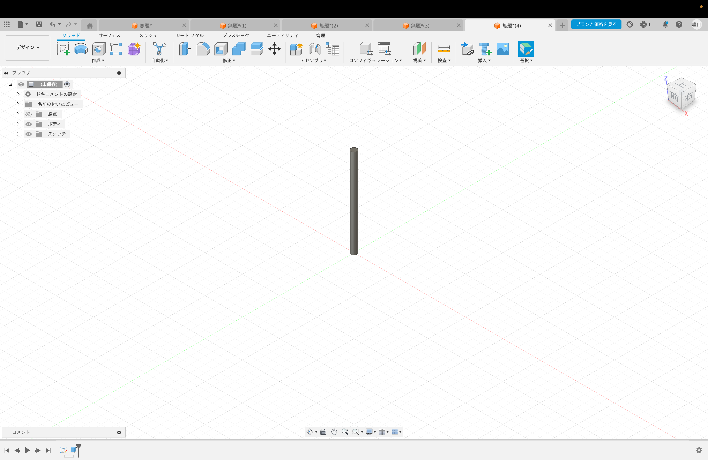

アイデア
今回のプロジェクトを進めていく上で、前回決めたテーマに基づきアイデアを考えた。今回自分が作ることにしたのは、木に見立てたかんざし。これを自分なりのメッセージを
こめて形にしていくことにした。
まず、かんざしは木を模して作っていくのだが、葉の部分にペレットにする前の
クリアファイルを使いたいと思う。せっかく色々なデザインのクリアファイルがあるのだから、
それをデザインとして作品に落とし込みたい。もちろん、幹や枝は
3Dプリンターを使い制作する。次に、かんざしをさしておくスタンドも作りたい。
これは、ゴミ箱を模したものにしたいと思う。正直、ゴミ箱をスタンドとするのは迷ったが、
このゴミ箱に葉を制作した時に出た切り端をつめ、そこからファイルを葉にした木(かんざし)
をさすことで、ファイルの捨てられたゴミ箱からファイルを実らせた木が生えるという構図にしたい。
そのデザインを通し、”ゴミ”つまり無価値だと思っていたものが姿を変え全く別のものに生まれ
変わるというメッセージを込めたい。この無価値から意味のあるものへというのは2年生の時
XBPでビジコンを行った際に考えた価値観を踏襲させたかったという気持ちも影響してる。
アイデアのイラスト

スタンドのモデリング
アイデアが固まり、方向が見えてきたためとりあえずモデリングしてみることにした。かんざしの方のデザインの詳細は決まりきらなかったため、とりあえずスタンドを
先にモデリングしてみることにした。
蓋の部分は実際に開閉できるようにしたかったため、パーツに分けてプリントすることにした。
この時、組み合わせる部分は採寸をピッタリ合わせるのではなく、あえて1mmから2mm余裕
を持たせて設計した。これは、これまで似たパターンで失敗してきたため自分なりの対策である。
設計図




次回は実際にプリントしたものと、かんざしのデザインを公開していきたい。